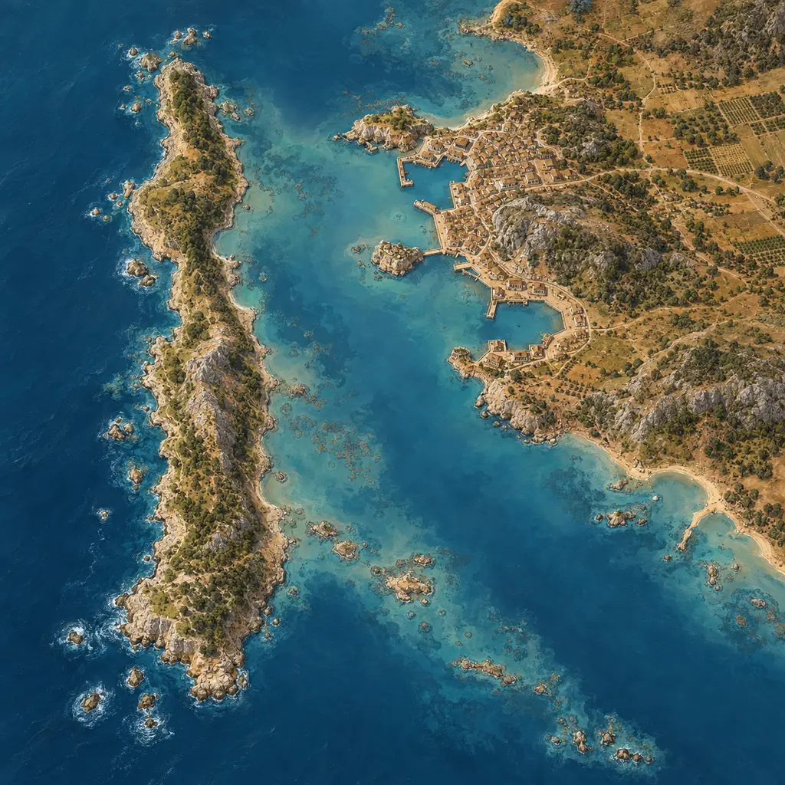
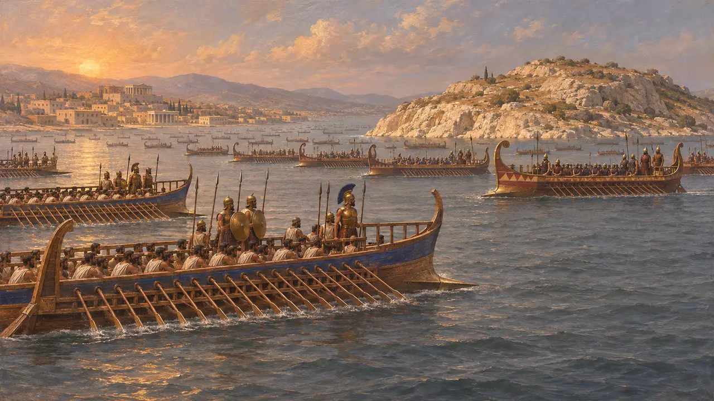
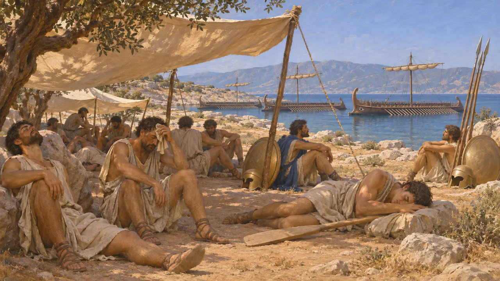
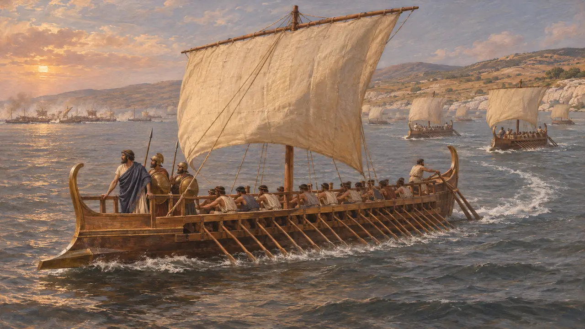
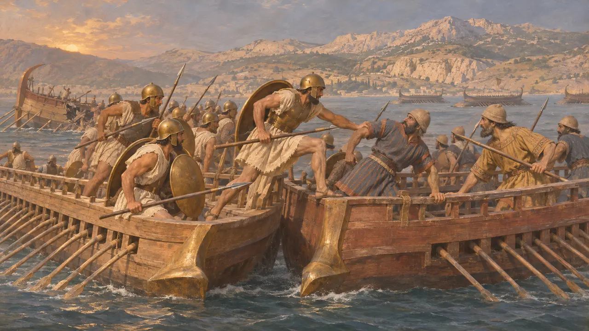
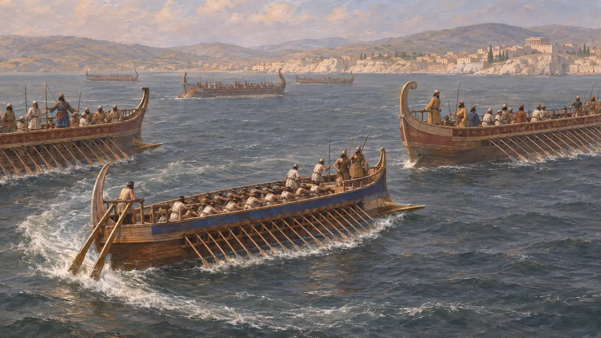

Enciclopédia › Batalhas e eventos

A batalha de Lade
Batalha naval ao largo de Mileto que pôs fim à Revolta da Jônia, 494 AEC
No jogo: Nível 7: Sardes em Chamas
Em 494, uma frota real, formada principalmente por contingentes da Fenícia, de Chipre, da Cilícia e do Egito, derrotou a frota combinada dos gregos jônios rebeldes ao largo da ilha de Lade, perto de Mileto. A derrota pôs fim à Revolta Jônica no mar e deixou Mileto exposta ao cerco e à tomada. Não sobrevive nenhum registro persa da batalha, de modo que a história é quase inteiramente de Heródoto.
No jogo: O jogo segue Heródoto: 600 navios reais contra 353 trirremes jônias, um treino abandonado e uma fuga sâmia. O número 600 é sua cifra redonda, e a descrição do diekplous na Crônica é uma reconstrução moderna.

Duas frotas ao largo de Mileto
Relato antigoHeródoto diz que os jônios decidiram defender Mileto no mar e reuniram 353 trirremes em Lade, então uma ilha diante da cidade e hoje uma colina na planície assoreada do Meandro. Os maiores esquadrões vieram de Quios (100), Mileto (80), Lesbos (70) e Samos (60). Contra eles, Heródoto põe 600 navios reais, com os fenícios como os mais ardorosos. Seiscentos é um número redondo que ele dá para outras frotas reais, e muitos historiadores duvidam dele.
Herodotus 6.6-9

Dionísio e os sete dias de treinamento
Relato antigoHeródoto conta como Dionísio de Foceia, que havia trazido apenas três navios, convenceu os jônios a aceitarem seu comando. Durante sete dias manteve os remadores nos remos e os fuzileiros sob armas, praticando a manobra chamada diekplous. Então as tripulações, desacostumadas a tal labor e sofrendo com o calor, recusaram-se a continuar. Armaram tendas na ilha e ficaram à sombra.
Herodotus 6.11-12

Os sâmios zarpam
Relato antigoHeródoto diz que o antigo tirano de Samos, Éaces, filho de Silóson, mandou recado aos capitães sâmios de que a ilha seria poupada se desertassem. Quando as frotas se encontraram, a maioria dos sâmios partiu, seguida pelos lésbios e depois por muitos outros. Onze navios sâmios ficaram e lutaram, e Samos mais tarde homenageou seus capitães numa coluna. Heródoto admite que os jônios culpavam uns aos outros e que ele não saberia dizer exatamente quem fugiu.
Herodotus 6.13-14

A resistência dos quiotas e suas consequências
Relato antigoOs habitantes de Quios, diz Heródoto, lutaram com mais ardor, com 100 navios, cada um levando 40 cidadãos escolhidos como fuzileiros, e tomaram navios inimigos antes de perder a maioria dos seus. Os sobreviventes encalharam em Mícale e atravessaram a pé para terras efésias, onde os efésios, tomando-os por saqueadores, os mataram. Dionísio capturou três navios e partiu para saquear, primeiro ao largo da Fenícia e depois a partir da Sicília. Heródoto data a captura de Mileto do sexto ano da revolta.
Herodotus 6.15-18

O diekplous e a culpa
DisputadoHeródoto menciona o diekplous, mas nunca o descreve. Muitos historiadores o interpretam como remar por uma brecha na linha inimiga e virar para abalroar os flancos ou as popas expostos, mas discutem como ele era formado, como era combatido e se uma semana de treino bastaria para ensiná-lo. Alguns também suspeitam de que a história dos jônios ociosos ecoe a culpa que as cidades trocaram entre si após a derrota, tal como chegou a Heródoto.
J. S. Morrison, J. F. Coates and N. B. Rankov, The Athenian Trireme, 2000
Fontes
- Herodotus 6.6-22
- J. S. Morrison, J. F. Coates and N. B. Rankov, The Athenian Trireme, 2000
- H. T. Wallinga, Ships and Sea-Power before the Great Persian War, 1993
- J. F. Lazenby, The Defence of Greece 490-479 BC, 1993
- P. Briant, From Cyrus to Alexander, 2002